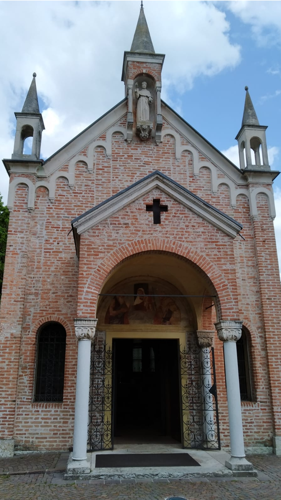

Venne fatto erigere nel 1432 da Gregorio Camposampiero sul luogo dove sorgeva il noce sul quale Antonio si era fatto costruire una piccola cella per pregare e predicare. È uno dei santuari artisticamente più interessanti della provincia di Padova: un autentico scrigno di devozione e bellezza. La struttura esterna è semplice: la facciata ha un piccolo protiro, eretto ad inizio Novecento, che protegge l’affresco cinquecentesco della lunetta raffigurante la Madonna con il Bambino tra i Santi Antonio e Girolamo sopra la porta d'ingresso. L’interno è ad aula unica, con la zona absidale protetta da una cancellata, perché riservata al coro delle monache clarisse del vicino convento. La chiesa fu affrescata intorno al 1535, probabilmente da un affermato pittore padovano, Girolamo Tessari detto Dal Santo, anche se studi più recenti individuano nel coevo Gualtiero Padovano l’autore. Sulle pareti dell'aula dieci scene raccontano miracoli compiuti da sant'Antonio. La splendida pala d’altare, datata 1540, è opera del pittore veronese Bonifacio de’ Pitati.
Built in 1432 by Gregorio Camposampiero on the site of the walnut tree where Anthony had built a small room for himself to pray and preach. It is one of the most artistically interesting sanctuaries in the province of Padua: a true treasure trove of devotion and beauty. The external structure is simple: the façade has a small porch, erected in the early 20th century, which protects the 16th-century fresco of the lunette depicting the Madonna and Child with Saint Anthony and Saint Jerome above the entrance door. The interior consists of a single nave, with the apse protected by a gate, as it was reserved for the choir of the Poor Clare nuns from the nearby convent. The church was frescoed around 1535, likely by a renowned Paduan painter, Girolamo Tessari, known as Dal Santo, although more recent studies identify his contemporary Gualtiero Padovano as the artist. On the walls of the hall, ten scenes illustrate the miracles of Saint Anthony. The splendid altarpiece, dated 1540, is the work of the Veronese painter Bonifacio de’ Pitati.
